🎯 O que você vai conseguir fazer depois desse capítulo
- Diferenciar território macrovascular de microvascular
- Descrever as 3 camadas histológicas do coração
- Reconhecer a estrutura histológica das válvulas cardíacas
- Descrever as 3 túnicas dos vasos sanguíneos e as funções do endotélio
- Classificar os tipos de artérias e diferenciar arteríola de artéria pequena
- Explicar a função das anastomoses arteriovenosas
- Classificar os 3 tipos de capilares
- Diferenciar vênulas, veias medianas e veias grandes
- Reconhecer vasos sanguíneos atípicos e vasos linfáticos
- Identificar cada uma dessas estruturas numa lâmina, na prática
🫀 Generalidades do Sistema Cardiovascular
🟢 Definição: responsável por transportar sangue por todo o corpo, fornecendo oxigênio, nutrientes, hormônios e removendo resíduos metabólicos. Também participa da termorregulação, resposta imune e homeostase do pH e líquidos corporais.
Sistema = conjunto de órgãos. Cardiovascular = Cardio (Coração) + Vascular (Vasos Sanguíneos).
| Território | Característica |
|---|
| Macrovascular | Visível a olho nu — Coração, Artérias e Veias |
| Microvascular | Só visível ao microscópio — Arteríolas, Capilares e Vênulas |
🫀 Coração — As 3 Camadas
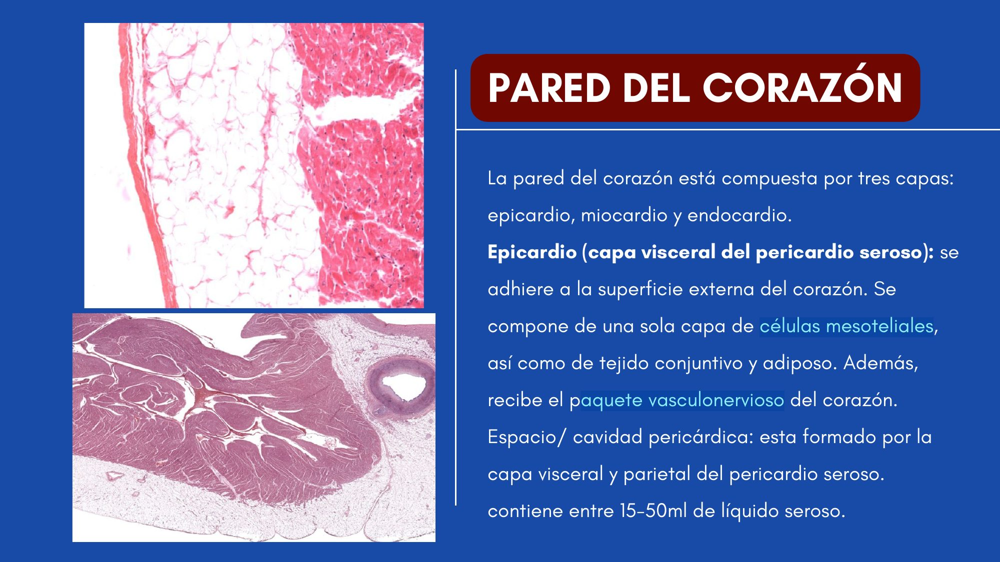
Parede do coração — corte histológico (Prof. João Vitor)
🟢 Coração: órgão muscular que bombeia o sangue. Divide-se em 2 Átrios (recebem sangue) e 2 Ventrículos (ejetam sangue).
| Camada | Composição |
|---|
| Epicárdio | = Pericárdio Visceral. Camada EXTERNA — mesotélio + Tecido Conectivo |
| Miocárdio | Camada MÉDIA, muscular — Cardiomiócitos (músculo estriado cardíaco) |
| Endocárdio | Camada INTERNA — endotélio + Tecido Conectivo |
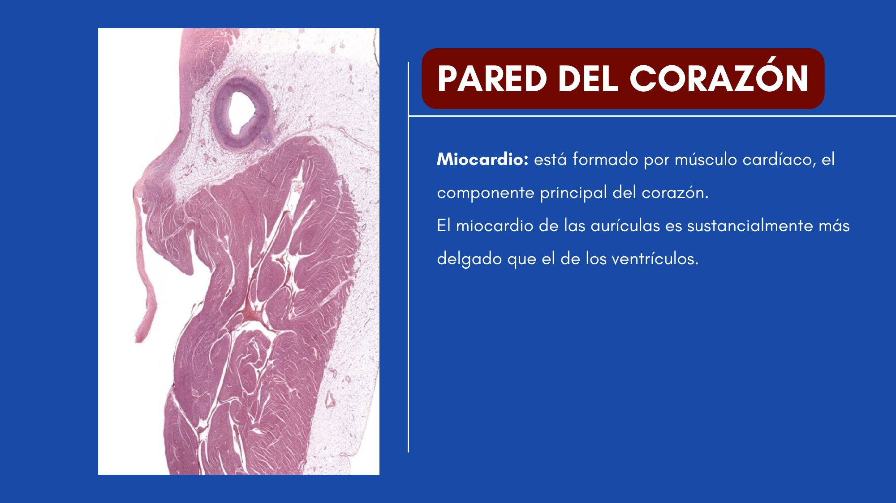
Miocárdio — cardiomiócitos com discos intercalares
🚪 Válvulas Cardíacas
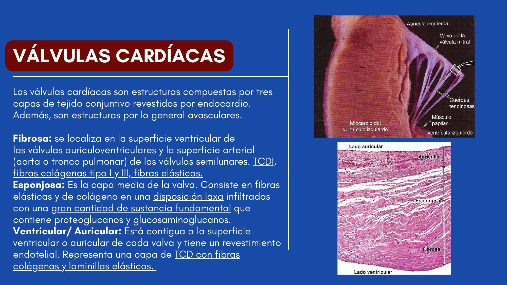
Válvula cardíaca — corte histológico
🟢 Estrutura: pregas do endocárdio reforçadas por um núcleo de tecido conjuntivo denso, revestidas por endotélio nas duas faces.
| Camada | Composição |
|---|
| Revestimento (2 faces) | Endotélio |
| Núcleo central | Tecido conjuntivo denso — continuação do esqueleto fibroso do coração |
🔴 Correlação Clínica: as válvulas NÃO têm vasos sanguíneos próprios — nutrem-se por difusão. Isso as torna vulneráveis a calcificação e endocardite (ver aba Correlação Clínica).
🩸 Vasos Sanguíneos — As 3 Túnicas
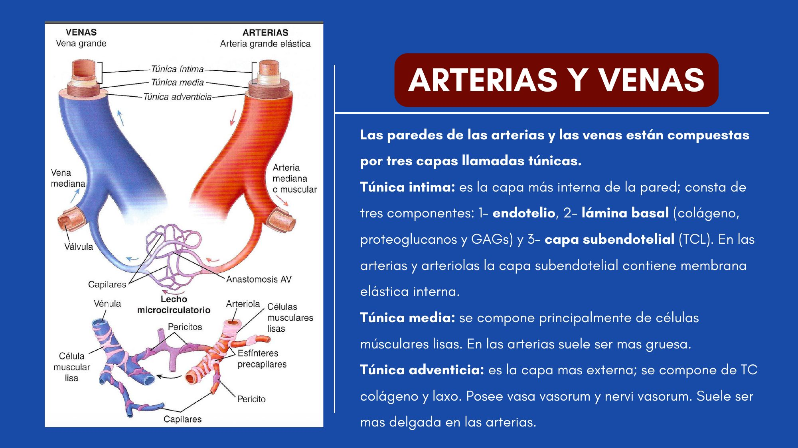
As 3 túnicas — artéria e veia lado a lado
| Túnica | Função | Composição Principal |
|---|
| Íntima | Contato com o sangue | Endotélio + lâmina basal |
| Média | Controle do diâmetro vascular | Músculo liso + fibras elásticas |
| Adventícia | Suporte e nutrição externa | Tecido conjuntivo + vasa vasorum (grandes vasos) |
🧬 Endotélio Vascular — Funções
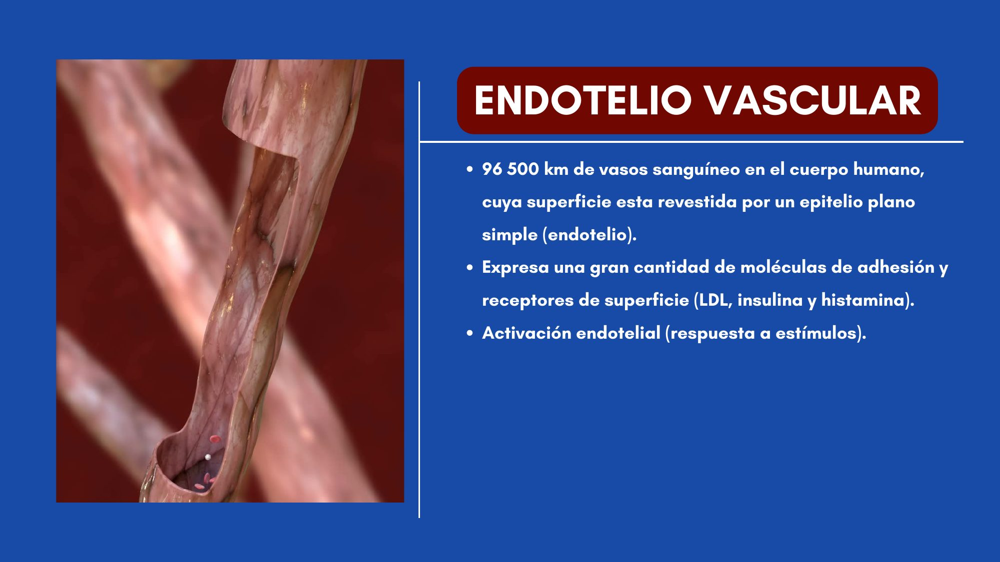
Endotélio vascular
🟢 Dimensão: cerca de 96.500 km de vasos sanguíneos, revestidos por um único tipo de epitélio — o endotélio (epitélio pavimentoso simples).
Funções das células endoteliais:
- Manutenção de uma barreira de permeabilidade seletiva
- Manutenção de uma barreira antitrombótica/anticoagulante
- Modulação do fluxo sanguíneo e da resistência vascular
- Participação na resposta inflamatória e imunológica
- Síntese de componentes da matriz extracelular e da lâmina basal
🧠 O endotélio não é um "forro passivo" — é metabolicamente ativo, quase um órgão endócrino/parácrino distribuído pelo corpo todo.
📊 Classificação das Artérias
| Tipo | Características | Exemplo |
|---|
| Artérias Elásticas | Grande calibre, múltiplas lâminas elásticas na média, amortecem a pressão | Aorta, carótida comum |
| Artérias Musculares | Mais músculo liso, menos elastina; regulação do fluxo | Femoral, radial, coronária |
| Arteríolas | 1 a 5 camadas de músculo liso; controlam o fluxo capilar | Pequenos vasos terminais |
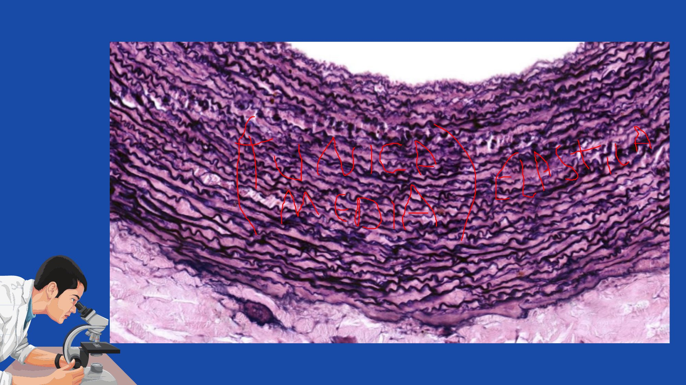
Artéria Elástica
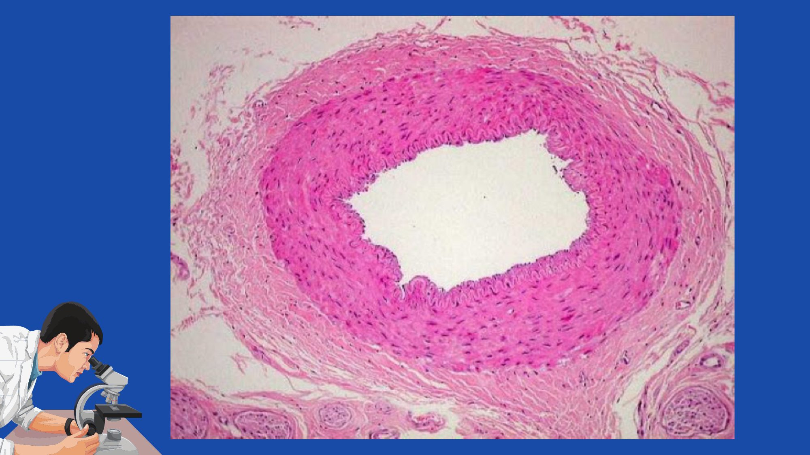
Artéria Muscular
📌 As arteríolas são as "torneiras" da microcirculação — sua vasoconstrição/vasodilatação regula quanto sangue entra no leito capilar.
🔬 Capilares — Os 3 Tipos
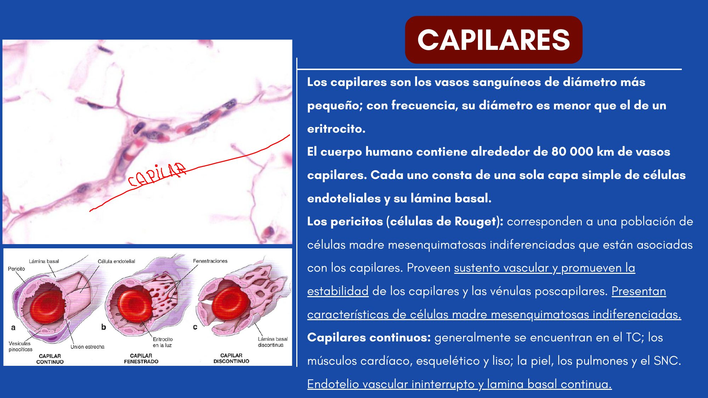
Capilar Contínuo
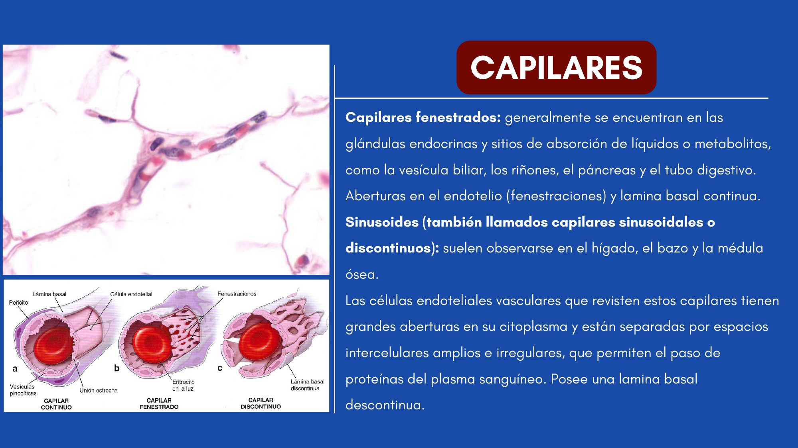
Capilar Fenestrado
🟢 Capilares: os vasos mais finos, compostos APENAS por endotélio, lâmina basal e pericitos.
| Tipo | Estrutura | Função/Localização |
|---|
| Contínuos | Endotélio e lâmina basal CONTÍNUOS | SNC, músculo, pulmão |
| Fenestrados | Poros no endotélio | Rim, intestino delgado, glândulas endócrinas, vesícula biliar |
| Sinusoides | Grandes lacunas, DESCONTINUIDADE | Fígado, baço, medula óssea |
🧠 Contínuo = barreira mais "fechada" (SNC precisa de barreira rígida). Sinusoide = barreira mais "aberta" (fígado/baço precisam passar células inteiras).
🔀 Anastomoses Arteriovenosas
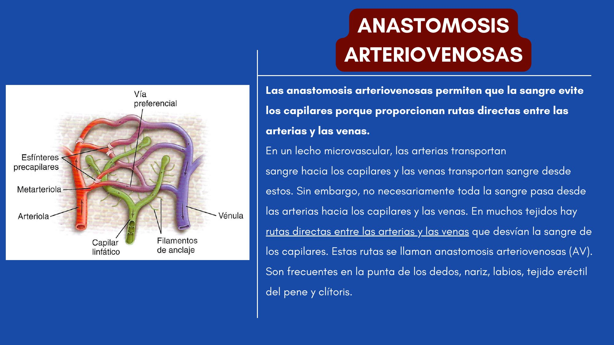
Anastomose arteriovenosa
🟢 Função: permitem que o sangue "pule" a rede capilar, indo direto de uma arteríola pra uma vênula.
| Aspecto | Detalhe |
|---|
| Onde ocorrem | Pele (dedos, nariz, lábios, orelhas) — regiões de termorregulação |
| Função | Fechamento de uma anastomose AV desvia sangue pra rede capilar superficial, aumentando perda de calor |
🔵 Vênulas e Veias — Classificação
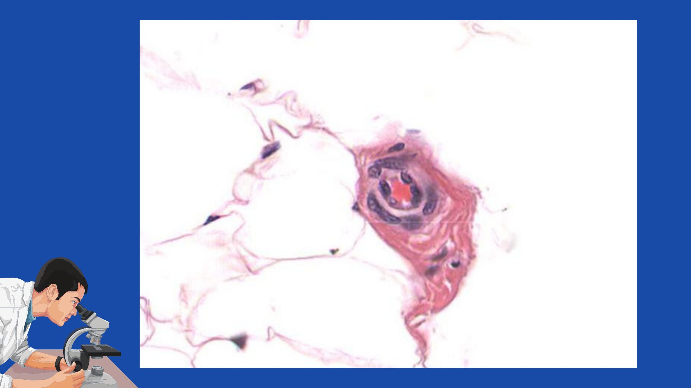
Vênula pós-capilar
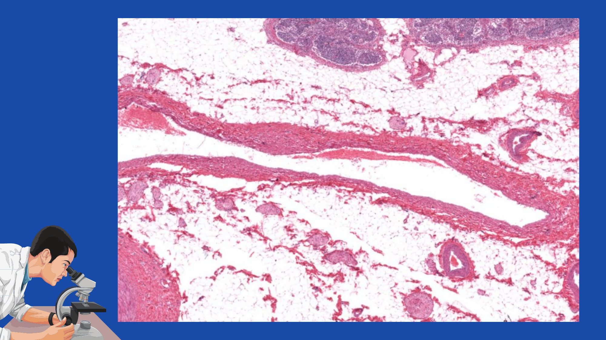
Veia Mediana
| Tipo | Diâmetro | Característica |
|---|
| Vênulas pós-capilares | < 1 mm | Coletam sangue da rede capilar; têm pericitos, não músculo liso ainda |
| Veias medianas | até ~10 mm | A maioria das veias profundas que acompanham artérias |
| Veias grandes | > 10 mm | Túnica média relativamente fina; adventícia GROSSA |
🧠 Nas veias, as túnicas são menos nítidas que nas artérias — a adventícia costuma ser a mais espessa (ao contrário das artérias, onde a média domina).
⚠️ Vasos Sanguíneos Atípicos
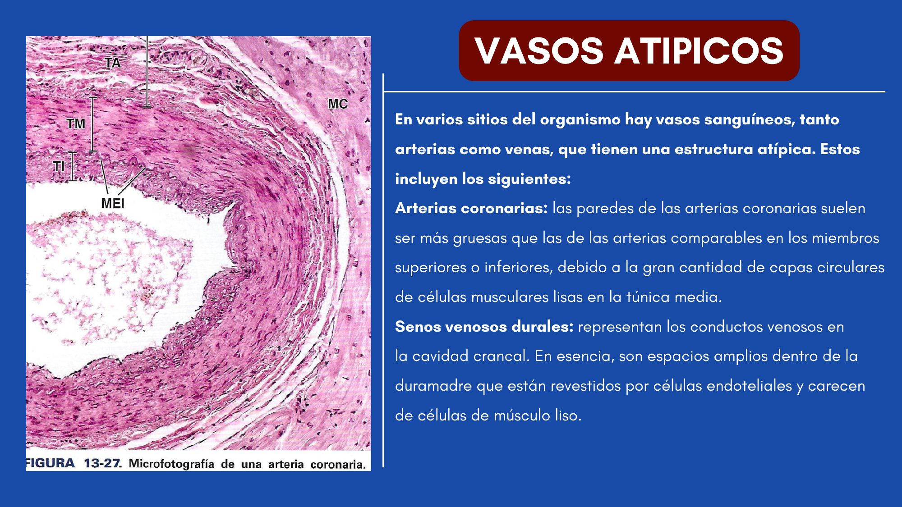
Vaso Atípico — exemplo 1
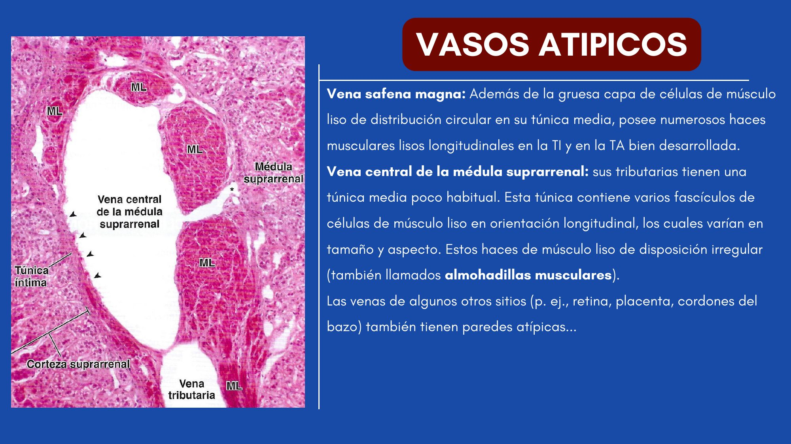
Vaso Atípico — exemplo 2
| Vaso | Particularidade |
|---|
| Artérias Coronárias | Túnica média mais grossa |
| Seios Venosos Durais | Poucas células musculares lisas (são espaços na duramáter) |
| Veia Safena Magna | Bastante musculatura lisa |
| Veia Central da Suprarrenal | Fascículos de músculo liso longitudinais (almofadas musculares) |
📌 Pergunta clássica de prova: "por que a coronária tem túnica média mais espessa?" — Precisa manter fluxo constante mesmo sob a pressão de contração do próprio miocárdio ao redor dela.
💧 Vasos Linfáticos
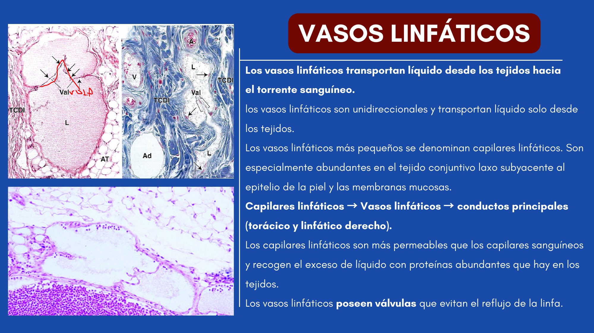
Vaso Linfático
🟢 Função: transportar linfa (líquido intersticial + proteínas + linfócitos) de volta ao sistema venoso.
| Aspecto | Detalhe |
|---|
| Estrutura | Paredes finas: endotélio simples pavimentoso + pouco T.C. + poucas fibras musculares lisas |
| Válvulas | Presentes — garantem fluxo UNIDIRECIONAL |
| Hemácias | AUSENTES no lúmen |
🔍 Como Identificar Rapidamente na Lâmina
Passo a passo pra bater o olho no microscópio e já saber o que está vendo:
- Primeiro: tem hemácias no lúmen? Se sim → é vaso sanguíneo. Se não, lúmen colabado/vazio → pode ser vaso linfático.
- Parede muito espessa, camadas concêntricas onduladas coradas escuras (elásticas)? → Artéria Elástica.
- Parede espessa, principalmente músculo liso homogêneo, lâmina elástica interna bem nítida (linha ondulada "vítrea")? → Artéria Muscular.
- Vaso pequeno, lúmen estreito, 1 a 5 camadas de músculo liso ao redor? → Arteríola.
- Parede finíssima, só uma camada de células achatadas, lúmen do tamanho de uma hemácia? → Capilar.
- Lúmen amplo e IRREGULAR (não redondo), parede fina, adventícia mais grossa que a média? → Veia.
- Cardiomiócitos com estriações transversais + discos intercalares + núcleo central? → Miocárdio.
💭 Raciocínio de prova prática: SEMPRE compare a espessura relativa das 3 túnicas. Média mais espessa → provavelmente artéria. Adventícia mais espessa → provavelmente veia.
⚠️ Pegadinhas da Prova
- Confundir mesotélio (cavidades, epicárdio) com endotélio (vasos, endocárdio)
- Trocar as 3 túnicas dos vasos — íntima (endotélio), média (músculo liso, mais espessa em artérias), adventícia (TC+vasa vasorum, mais espessa em veias)
- Achar que as válvulas cardíacas têm vasos próprios — elas são AVASCULARES, se nutrem por difusão
- Confundir a função do endotélio (regulação/barreira) com a do miocárdio (contração/bombeamento)
- Trocar o critério que diferencia arteríola de artéria pequena (nº de camadas de músculo liso) com o critério dos capilares (tipo de endotélio)
- Esquecer que anastomose arteriovenosa faz o sangue EVITAR o capilar (termorregulação), não facilita a troca
- Esquecer que capilares linfáticos NÃO têm lâmina basal contínua
- Confundir capilares contínuos (SNC, barreira fechada) com sinusoides (fígado/baço, descontínuos)
- Esquecer os vasos atípicos — coronária (média espessa), seios durais (poucas fibras musculares)
📚 Se você só puder lembrar de 9 coisas
- Coração: Epicárdio (mesotélio+TC) → Miocárdio (cardiomiócitos) → Endocárdio (endotélio+TC)
- Válvulas: endotélio + TC denso, SEM vasos próprios
- Vasos: 3 túnicas — Íntima (endotélio), Média (músculo liso), Adventícia (TC+vasa vasorum)
- Endotélio: barreira seletiva + antitrombótico + regula tônus vascular
- Artérias: elásticas (grande calibre) → musculares (médio) → arteríolas (nº camadas de músculo liso)
- Anastomose AV: sangue pula o capilar, função de termorregulação
- Capilares: contínuos (SNC) / fenestrados (rim) / sinusoides (fígado)
- Veias: adventícia geralmente é a camada mais espessa
- Vasos linfáticos: sem hemácias, com válvulas, alta permeabilidade
💡 Dica Clinicus
💭 Na prática, 80% das lâminas de prova de sistema cardiovascular caem em 4 perguntas: (1) qual túnica é essa, (2) artéria ou veia — compare a espessura relativa das túnicas, (3) que tipo de artéria/capilar é esse, (4) qual estrutura está sendo apontada na seta. Treine reconhecer ESSAS 4 coisas de olhos fechados antes de decorar detalhes menores.
🩺 Endocardite Infecciosa
Como as válvulas cardíacas não têm vasos sanguíneos próprios (se nutrem por difusão), a resposta imune local é mais lenta — o que favorece a colonização bacteriana e a formação de vegetações nas válvulas, especialmente em pacientes com lesão valvar prévia.
🔴 Relevância: pergunta clássica de prova — "por que as válvulas são um sítio preferencial de infecção?" A resposta é a avascularidade.
🩺 Aterosclerose
Doença que acomete principalmente artérias elásticas e musculares de médio/grande calibre — formação de placas de ateroma na túnica íntima, compostas por lipídios, células inflamatórias e tecido conjuntivo.
🔴 Relevância: as artérias coronárias (musculares, com túnica média espessa) são um dos sítios mais afetados clinicamente — a aterosclerose coronariana é causa direta de infarto do miocárdio.
🩺 Varizes (Insuficiência Venosa)
As veias dos membros inferiores possuem válvulas que garantem o fluxo unidirecional do sangue contra a gravidade. Quando essas válvulas se tornam incompetentes, o sangue reflui e se acumula, dilatando a veia — formando varizes.
🔴 Relevância: a veia safena magna (vaso atípico, com bastante musculatura lisa) é classicamente a mais acometida por varizes.
🩺 Fenômeno de Raynaud
Vasoespasmo excessivo nas extremidades (dedos), com envolvimento da regulação das anastomoses arteriovenosas e arteríolas — causa episódios de palidez, cianose e depois rubor nos dedos, geralmente desencadeados por frio ou estresse.
🔴 Relevância: liga diretamente o conceito histológico de anastomose AV (termorregulação) à apresentação clínica.
🩺 Linfedema
Acúmulo de líquido linfático nos tecidos por obstrução ou malformação dos vasos linfáticos (ex: pós-cirurgia oncológica com remoção de linfonodos, ou filariose). Como os capilares linfáticos não têm lâmina basal contínua, pequenas obstruções já comprometem bastante a drenagem local.
🔴 Relevância: reforça a importância da alta permeabilidade e da ausência de lâmina basal contínua nos capilares linfáticos.